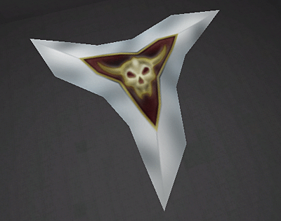

MilkShape For UT2003 Static Meshes
Prerequisites: UT2003 and Unreal Ed 3.0, MilkShape 3D v.1.6.5 or above. Familiarity with elementary 3D modeling terminology and processes is recommended, and some preliminary practice with the MilkShape 3D (MS3D) interface is useful.
Tutorial Structure:
- /Modeling and Smoothing in MS3D
- /Materials and Smoothing for UEd3
- /Export and Import
- /Applying File Textures in MS3D
Overview
This tutorial steps through a simple MilkShape modeling task, using the basic tools for creation, selection and manipulation of the model and its components. It describes the process of assigning materials in MilkShape 3D as a means of preserving smoothing groups/hard edges when the objects are imported into UEd 3 as static meshes. Export options that permit import into UEd3 are described. Planar texture mapping is described.
The object being modeled and exported for use as a static mesh in UEd3 is a three-pointed blade weapon similar to a shuriken or the Unreal razorjack ammo:

A shuriken made in MilkShape and imported into UEd3 |